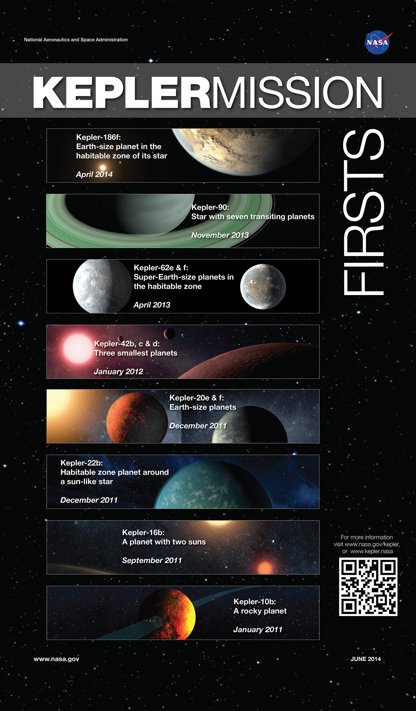

Kepler
A search for Earth-like planets around Sun-like stars
The Kepler spacecraft launched in March 2009 and spent a little over four years monitoring more than 150,000 stars in the Cygnus-Lyra region with continuous 30-min or 1-min sampling. The primary science objective of the Kepler mission was transit-driven exoplanet detection with an emphasis on terrestrial (R < 2.5 REarth) planets located within the habitable zones of Sun-like stars.
Kepler exceeded its nominal mission lifetime of three years and continued operating for an additional year as an extended mission. Between the nominal and extended missions, Kepler has discovered thousands of transiting planets and revealed that small planets are abundant in the Galaxy. The ultimate goal of the Kepler mission is to measure the fraction of stars with Earth-size planets as well as the fraction of stars harboring Earth-size planets in the Habitable Zone, work which is still in progress by the Kepler Science Office. The community is also encouraged to exploit the mission's unique data archive.
 Image Credit: NASA Ames/W. Stenzel
K2
Extending Kepler's power to the ecliptic
The loss of a second of the four reaction wheels on board the Kepler spacecraft in May 2013 brought an end to Kepler's four plus year science mission to continuously monitor more than 150,000 stars to search for transiting exoplanets. Developed over the months following this failure, the K2 mission represents a new concept for spacecraft operations that enables continued scientific observations with the Kepler space telescope. K2 became fully operational in June 2014 and is expected to continue operating until 2017 or 2018.
The K2 mission entails a series of sequential observing "Campaigns" of fields distributed around the ecliptic plane and offers a photometric precision approaching that of the original Kepler mission. Operating in the ecliptic plane minimizes the torque exerted on the spacecraft by solar wind pressure, reducing pointing drift to the point where spacecraft attitude can effectively be controlled through a combination of thrusters and the two remaining reaction wheels. Each campaign is therefore limited by Sun angle constraints to a duration of approximately 80 days.
Scientific motivations
K2 is an entirely community-driven mission. All K2 targets are proposed by the community through the Guest Observer program. The scientific potential spans a wide range of astrophysics. It is anticipated that K2 will:
- Provide a yield of hot planets around bright stars for follow-up transit spectroscopy to facilitate rapid advances in the characterization of exoplanet atmospheres.
- Provide a yield of small planets around bright, small stars to facilitate the most precise follow-up measurements to date of masses, densities and compositions.
- Identify locations and characteristics of potentially-habitable planets around bright M-dwarfs in the solar neighborhood.
- Determine if hot gas giants exist around young stars, or whether they migrate to small orbits at a later epoch by tidal or other interactions.
- Determine the relationship between stellar structure, rotation and activity within stellar associations over a range of ages and metallicity.
- Identify the progenitors of Type Ia supernovae from photometric structure in the rise to outburst maximum.
- Discover and characterize binary stars within open clusters and stellar associations.
- Characterize internal stellar structure and fundamental properties of stars using the tools of asteroseismology.
- Provide a large, regular cadence survey of AGN activity in the optical bandpass.
- Participate in multi-mission, multi-band monitoring campaigns of ecliptic targets along with other space-based hardware or ground-based telescopes.
Potential targets
The K2 mission welcomes all proposals including, but not exclusive to, exoplanet, stellar, extragalactic, and solar system science. The following is a list of potential targets:
- Possible transiting planet hosts
- Known exoplanet hosts
- Pulsating stars
- Rotationally variable stars
- Flaring stars
- Accreting stars and interacting binaries
- Binary stars
- Open clusters
- Stellar associations
- Galaxies and supernovae
- Active galactic nuclei
- Microlenses
- Solar System planets
- Asteroids
- Comets